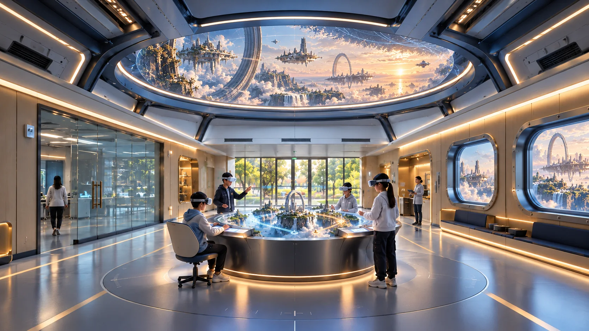
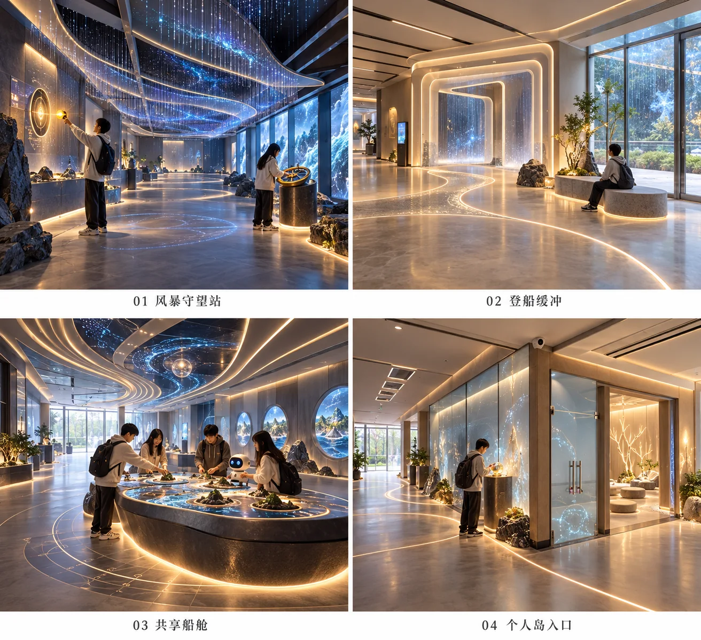
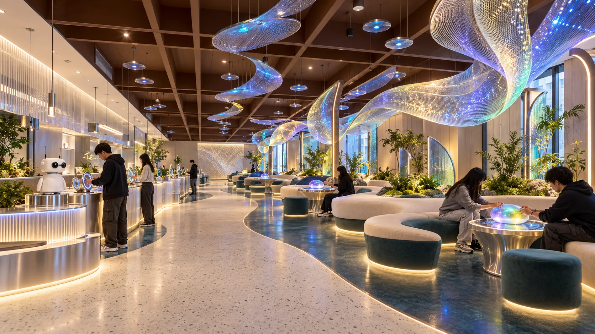
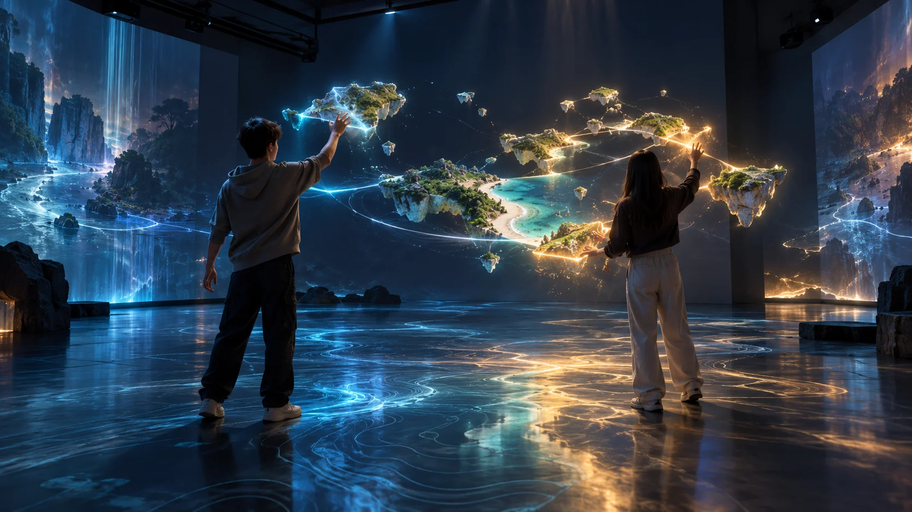
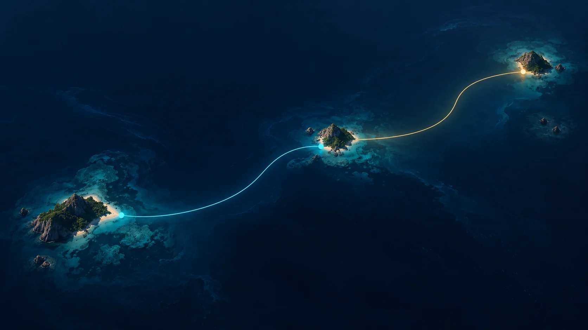
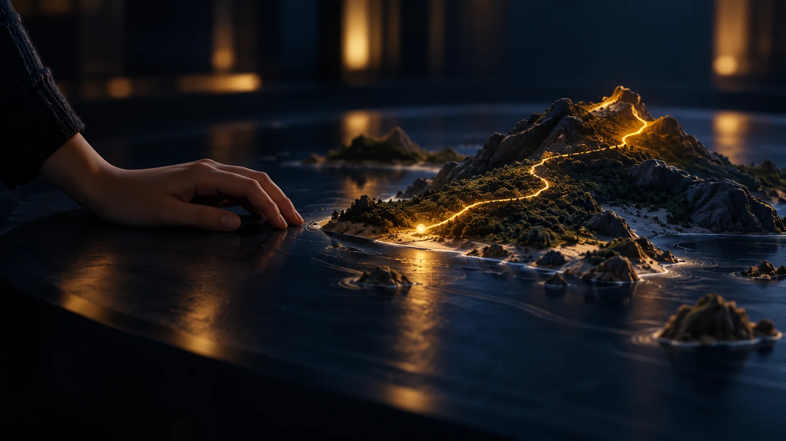
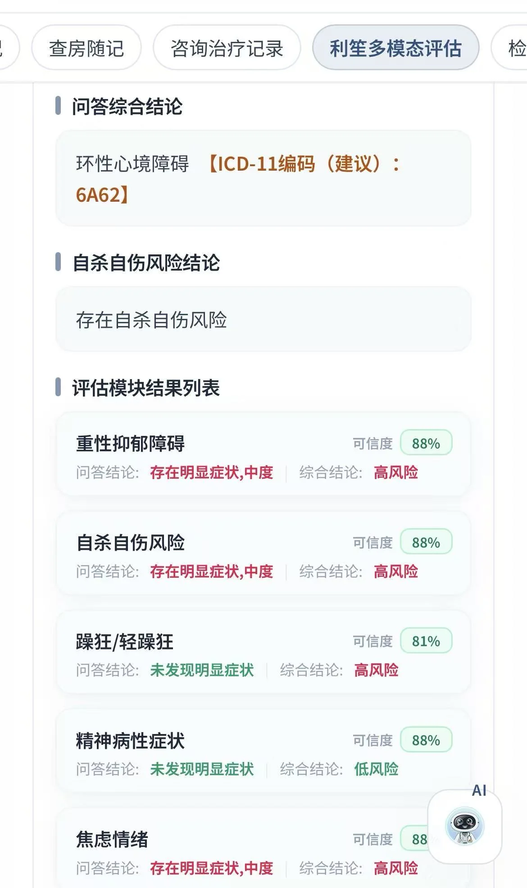
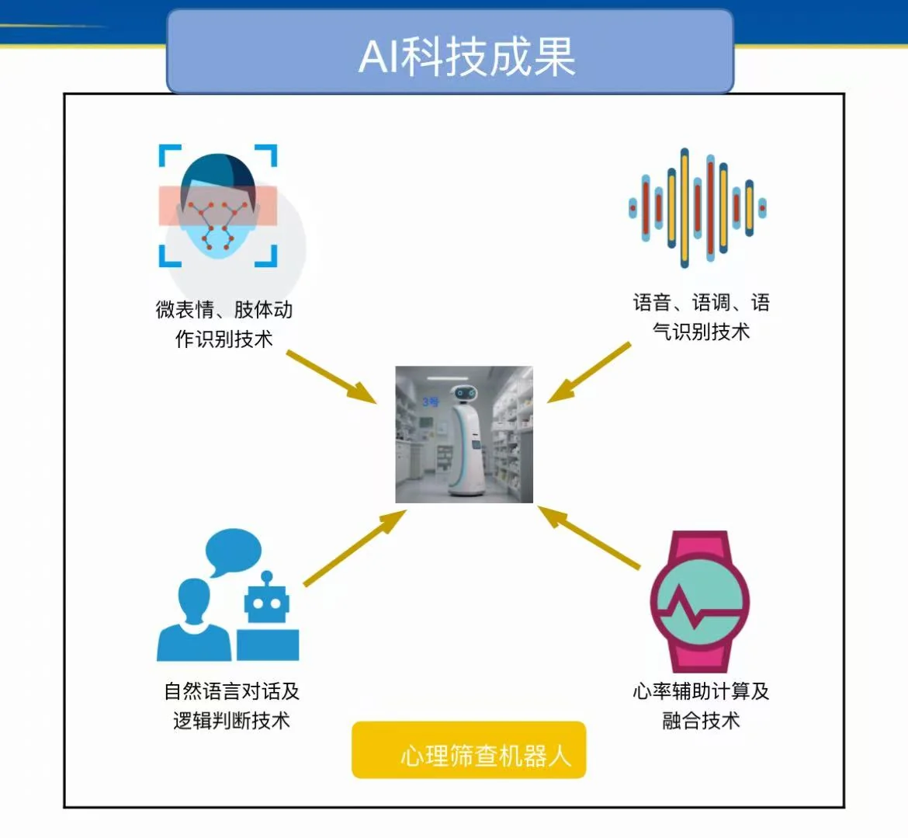
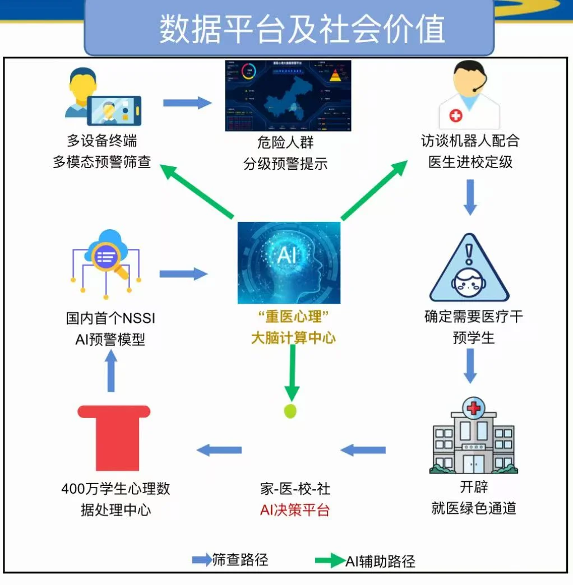

原场地 / 入口大厅 · 00:00
入口 · 控制权
确认即生成
先说明服务、授权与暂停方式，再由参与者选择主题与可承受强度。
自主支持 · 共同决策 · 创伤知情
进入、暂停、退出都由本人决定
面向经评估并自愿参与的青少年与家庭，AI在专业目标与安全边界内，结合当下选择即时生成不同的岛屿、角色和互动情境。每次进入都有完整体验，复访时依据新的状态与上次练习重新生成，持续练习同一项现实技能。
以 Copilot 为既有入口，整合经核验、经授权的病史、量表、治疗与专业计划，不另建一套医疗记录。
衔接利笙筛查、随访机器人、陪伴机器人和采集设备；公开体验使用演示身份，临床路径依专业方案进入。
AI把专业目标即时转译为群岛、角色与技能任务。同一目标可呈现为不同场景；本次行动与反馈经本人确认、治疗师复核，成为下次生成的依据。
复访不只是换一张岛屿贴图。四种输入改变空间规律、登场角色和开放事件；只有本人同意留下的痕迹，才会成为下一航次的线索。
这只是网页上的组合演示，不采集数据，也不对选择作心理判断。正式体验须经评估、授权与专业目标约束。
只保留本人确认的版本；下一次可以被新角色重新理解。
选择仅改变网页中的航行预览，不采集或推断心理状态。
先说明服务、授权与暂停方式，再由参与者选择主题与可承受强度。
利笙筛查、Copilot专业计划、随访与陪伴终端贯穿评估、治疗和康复，连接院内体验与院外练习。
同一项技能可以生成森林、剧场或未完成的工坊，不把一个人固化成一种岛。
共享一张地图，在两条都合理的路线间练习信息交换、请求与确认。

困扰成为可以命名、观察和调整距离的场景元素，而不是必须击败的敌人。

角色互换与观点采择让参与者看见新的解释，但不替现实中的任何人下结论。

移动关系节点，尝试一句请求、一次拒绝或一条新的边界，再观察场景如何回应。

游览结束后形成个人航行报告：参与的场景、主动选择、技能尝试、精彩瞬间与阶段成就，由本人确认后呈现；专业人员另行复核临床记录。


在生活中记录是否尝试、对方回应与遇到的阻碍。复访时先一起回看，再按当下状态生成新的角色、场景与练习难度；同一目标不会重复播放同一段故事。
空间负责把练习变得可见、可暂停、可重来。现场记录的是参与者做出的选择和技能尝试，不由画面直接推断诊断或疗效。
选择说、画、观察或暂停；纠正机器人也能让世界继续。
记录所选方式、暂停与修改；不把“未回答”计为失败。
自主支持的临床表达与青少年治疗联盟、参与意愿有关；这是交互原则，不是机器人的疗效证明。
选择设备，查看对应航段、参与者要完成的心理行为、现有研究支持的范围，以及本中心仍需验证的部分。
设备图为概念示意。文献研究对象、干预方案和结局各不相同；引用用于解释设计依据，不能直接外推为本项目疗效。
证据首先对应具体心理治疗技术和研究人群。VR、感官空间和测量反馈有各自研究；“AI即时生成的群岛体验”作为整体仍需安全性、参与度、机制和临床结局的分阶段验证。
筛查机器人已获二类医疗器械许可证。具体注册信息以证书原件为准。
围绕青少年心理健康、团体技能训练与数字化随访，形成临床服务和研究基础。
从安全性、参与度和过程机制开始，进一步评估功能与长期结局。
结合问答与多模态评估形成需要专业核验的报告。右图来自提供的界面示例，含风险提示；任何风险分层与诊断建议都必须进入临床人员复核流程。



记录参与、暂停、退出、困扰度、眩晕与不良事件，确认体验是否可接受。
观察心理距离、心理灵活性、自我效能和技能使用，解释改变如何发生。
经本人和专业人员共同选择一项现实中的小练习；随访记录尝试、阻碍与调整，复访结合功能、症状、治疗参与和技能使用，检验迁移是否发生。